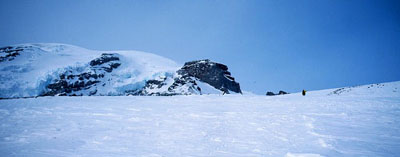
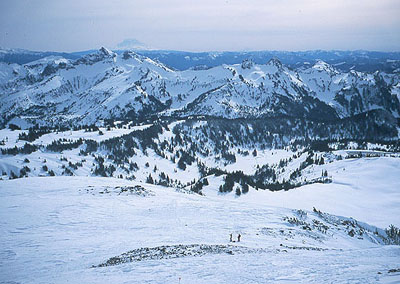

Mount Rainier
- Ingraham Glacier Direct
- February 12, 2002
This is a letter I sent to friends Steve and Josh. Some trips feel too big to write in detail about right away, I think this is one. Although we didn’t make the summit, it was a great learning experience. I want to thank my partners for showing the way, and tolerating my mistakes.
Hi guys,
I wanted to tell you that myself, Chris, Marek, and Kevin almost climbed Rainier this week. We took two days off of work, and hiked to Camp Muir on Tuesday. The weather and snow conditions were excellent. Very little wind, no need for snowshoes on the way. We got there in a good time of 4:20. We dug out the hut (15 minutes) and piled inside to begin cooking and melting snow. In the night the wind picked up, gusting all around. I borrowed a big down jacket from Chris, and this was essential for the climb (and sleeping).
We got up at 2:30 am, and were climbing at 5. (one stove for 4 people takes too long to cook!). The wind was pretty bad, but we expected to get out of it after Cathedral Gap. We were climbing the Ingraham Direct route. But at Ingraham Flats the wind was stronger than ever. I’d look up the glacier in the dawn light and see a vast cloud of spindrift hurtling down at a tremendous speed. Then it would HIT us. Ski goggles were an essential to protect the face. Entirely due to the strength and determination of Marek and Chris we continued on, up steeper glacier slopes, stepping over the occasional crevasse, and leaving wands. I remember the wind howling in my ears, the shortness of breath, and the beautiful sunrise over Little Tahoma. The snow was mostly boot deep or less, and excellent for arresting and maintaining purchase.


We reached the area above Gibralter Rock, and continued up undulating slopes, many false summits gradually crushing my exhausted spirit! Chris led us to a slightly protected crevasse to have a drink and something to eat. Marek estimated we had 1/2 hour to reach the crater. Here Kevin offered to unrope and wait, and the same desire awakened in me. My hands had been freezing, rewarming only when I could ball them into a fist for several minutes. And the wind had increased, sometimes knocking us back several paces. I was very tired! But we continued. Above the crevasse, the wind and spindrift increased twofold in intensity. Finally I was crawling, slamming the pick into the snow above me and pulling up on it. Marek was pulling on the rope. We could see the rocks of the crater rim, but to me, in this wind, it looked quite far, especially with the crawling! I tried to communicate that I wanted to go down with Kevin and wait by the crevasse, but Marek and Chris couldn’t hear. So we all went back to that place (only 100 feet down). We were all disappointed (maybe bitterly disappointed is a better description!). But I knew that to remain a useful member of the climbing party, I needed to save my strength for the descent. Chris and Marek talked in Polish for a while, first deciding to go up together, then to go ahead and come down with Kevin and I. Meanwhile, he and I had been preparing a place out of the wind with his shovel to wait.
So we started down, Kevin, me, Marek, Chris. Now the wind was at our backs, pushing us down the slope. It had also increased even more, and I could barely see Kevin in a flurry of snow. Thank god for the wands, they were our lifeline. Kevin was facing into the slope rather than plunge stepping, and somehow getting less security with this method. He slipped several times on the way down, pulling me off my stance and into a self-arrest position. After awhile, I was used to it, and pleased that I got the chance to use that technique for real on a climb! I was irritating Marek by pulling on his rope and he would give it a mighty tug now and then. In the flurry of wind and noise I didn’t understand what he wanted. I thought he wanted me to retrieve the wands, so I was doing this. But it was hard to avoid pulling, because I would feel slack, take a step, feel slack, take a step, NOW THE ROPE IS TIGHT, MAREK PULLS ON THE ROPE!!! I was an idiot, I should have carried a coil in my hand, but I apparently wasn’t thinking clearly enough. The other problem was the clumsiness of my hands. I had mitts, which were vastly inferior to gloves. Holding a coil would have been difficult. Getting water was impossible without removing the mitts and exposing my fleeced hands to the spray. Consequently, at any trifling stop, I was taking too long. I was forced to take a risk on the descent, by not leashing my axe. It took too long for me to change the leash from one mitt to the other as our orientation to the slope changed, so I maintained the slippery hold on my axe with a death-grip, and was forced to keep this situation uppermost in my mind. I wanted to rig up a sling from the axe to my harness like Kevin (he also had the clumsy mitts), but the urgency and cold prevented any chance. The hand on the axe would slowly freeze.
Kevin started going the wrong way and missing wands, I’d yell to get him back on track. Finally I learned his goggles had iced up, and that made him unable to see. He put me in front, and I waited for Marek and Chris, so we basically reversed the rope orientation. We continued down, now used to the conditions, but lost the wands for a few hundred feet, taking a wrong turn into crevasses. Marek fell into two, and warned me about them. I went around the hole, but fell in myself in a different place. Even this became a normal situation. We got back on track, and reached Ingraham Flats, continuing in strong wind all the way back to Muir.
A final example of how incapacitated I was by my mitts, was that I had a quart of hot chocolate in my jacket. Trying to zip it up with the mitts, I managed to break the zipper, and was unable to unzip the jacket to get to the chocolate all the way up and down the route. Only out of the wind in the hut did I discover how to get the jacket off and drink. I had to pull it off over my head. So you see how new I am to this combination of high and cold!
We thought the adventure was over, but the wind had followed us down. The Muir snowfield was a raging sea of roiling ice particles. Two scary things happened. First, Kevin descended a few minutes ahead of us, and Marek recognized he was walking well towards the Nisqually Glacier into “ no man’s land.” I remember seeing his figure just visible above the roil and thinking that he would disappear forever. I told Marek not to lose sight of me and I ran after him, screaming his name. Finally, he heard something, turned around, was unable to see or stand up to the stinging ice in his face, and kept walking down. So I kept running and yelling. This time he heard me, and traversed left as I indicated. Later, on slopes we had walked sleepily up the day before, I fell in a strong gust of wind which then pushed me down the slope. I arrested somewhat weakly, fully understanding how people could die on this innocent snowfield.
But it was all a jumble. Mixed with these moments of hardship were scenes of awful beauty. I’d got crampons back on because an area of nearly flat water ice had us all falling comically. In a brief moment of clarity, the sound of the wind left my consciousness and I watched a huge silent cloud heave over the horizon. Tipped with pink, it was a harbinger of weather, with an army marching behind it. “Jesus, what a godawful place,” I thought, and meant it was an amazing place. We got out of the wind when we entered the clouds, but the whiteout sent us hunting for wands and tracks again. Then snowshoeing in the dark, and out.
The gate was locked, but a Longmire hotel employee gave us the combination. Amazingly, I wasn’t very tired, and stayed up late watching the Olympics with Kris. But yesterday I woke up with tremendous stiffness/pain - the muscles of my shoulders and neck were like rocks. Also skin on my fingertips is peeling, and a section of my cheek that was exposed to the wind turned dark brown and peeled. Crazy…
Two days later, a solo climber made the summit quite easily, and at least one other team tried on Sunday but the weather window had closed for good.
So that’s some stuff that happened!